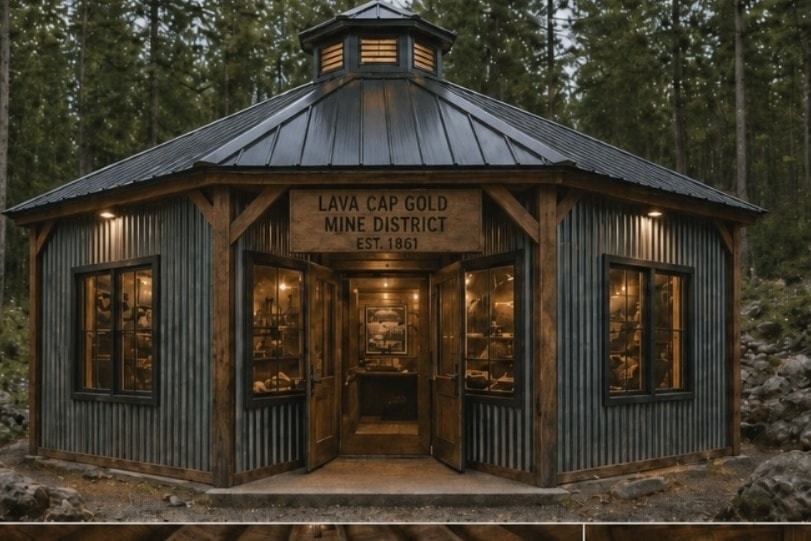
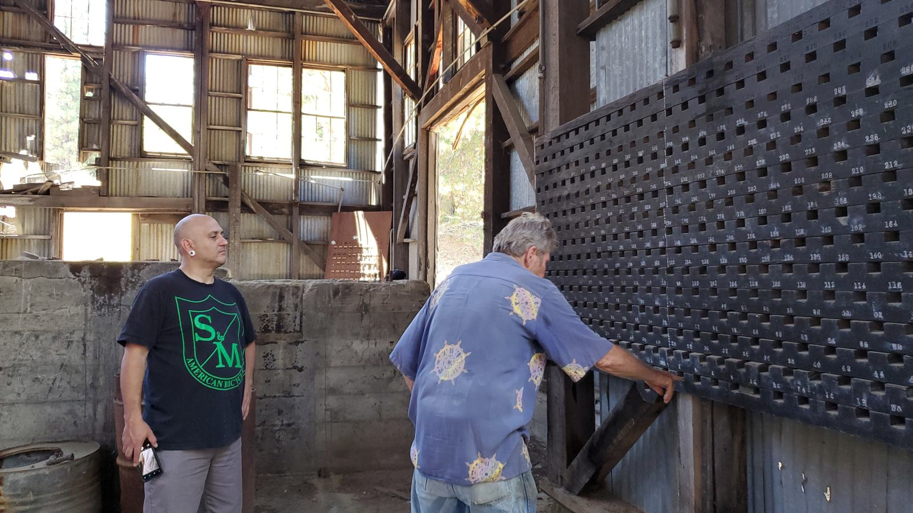
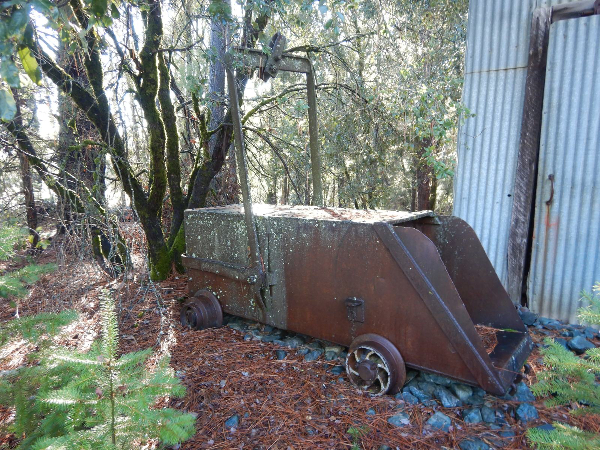
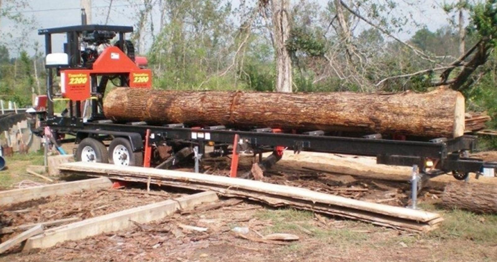

From Mine to Monument
Deep in the Sierra Nevada foothills, the Lava Cap Gold Mine stands as one of California's most significant Gold Rush-era sites. For decades it lay dormant, its tunnels silent and its stories untold.
Today, a dedicated community of historians, educators and preservationists is breathing new life into this landmark. We are transforming the Lava Cap mine into a historical site, educational center and living museum, so the stories of the miners, the era and the land are never forgotten.
Learn Our Story
Experience Living History

Historical Tours
Walk the same ground as the miners of the 1930s, with authentic artifacts, restored structures and expert storytelling. Starting spring 2027.

Educational Programs
K-12 field trips and university research partnerships connect people with California's mining heritage.

Preservation
Our team of historians and conservationists works to restore and protect the original structures, equipment and archives.

Community
Workshops, volunteer days and living history demonstrations that bring neighbors together.
Help Us Preserve History for Future Generations
Every dollar donated goes toward restoring the Lava Cap mine, developing educational programs and making sure this piece of California history endures.
Donate NowWays to Support